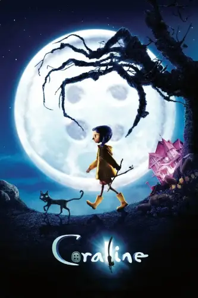
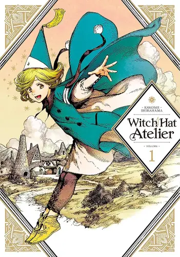
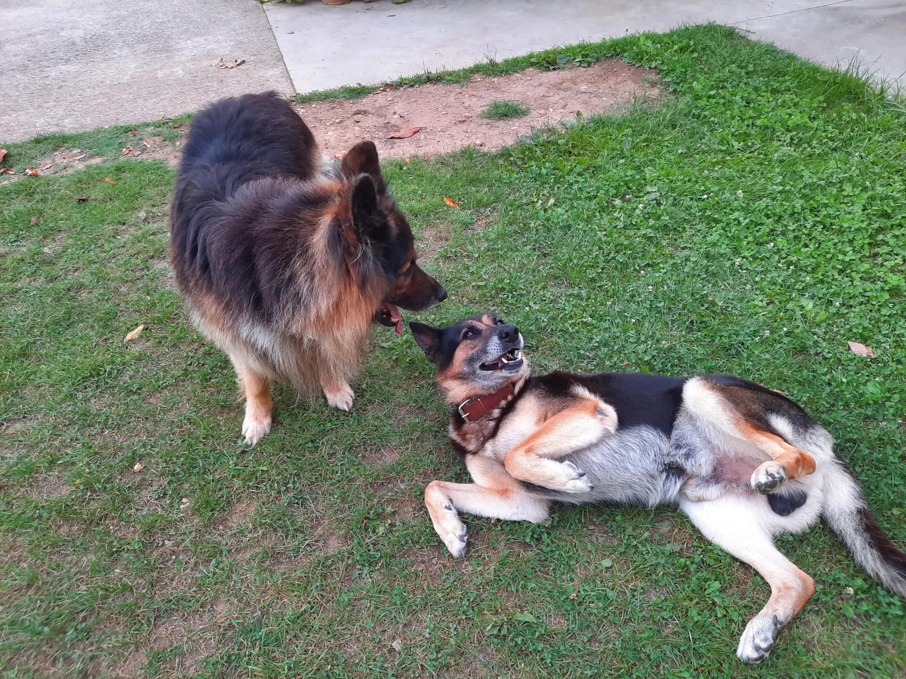
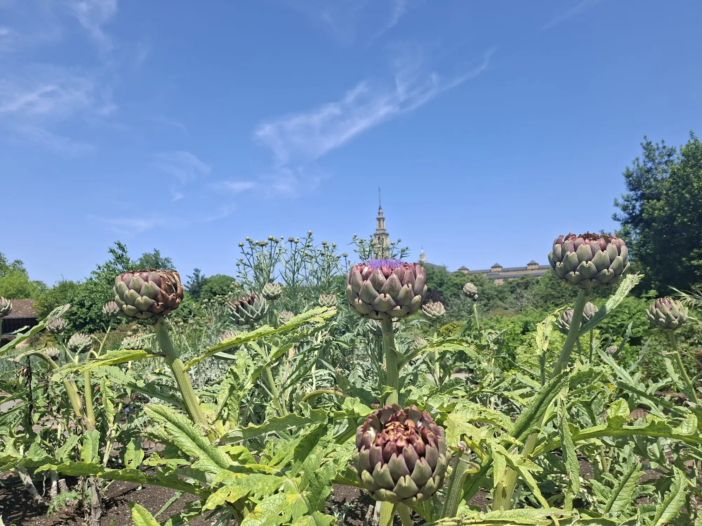
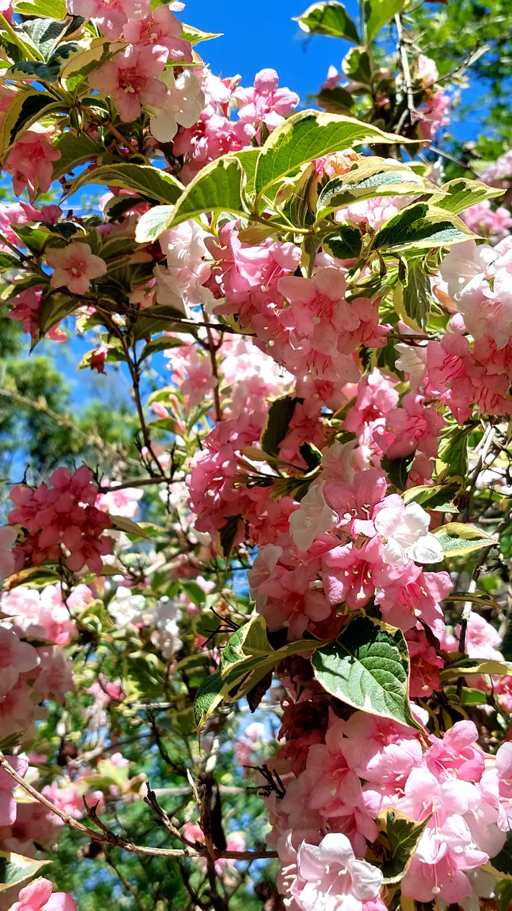
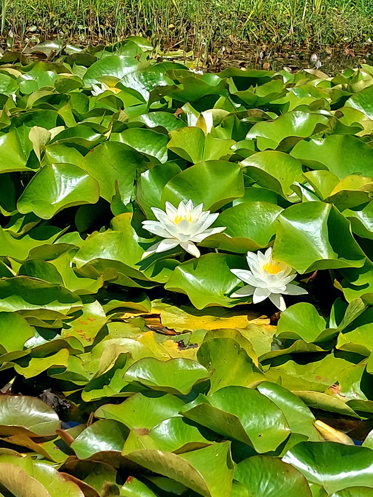

Una de mis películas favoritas de animación es "Los mundos de Coraline". Es una película
de fantasía oscura, horror y misterio. En mi opinión, es un ejemplo más de que la animación
puede ser disfrutada por todos los públicos.
Tráiler oficial de la película Los mundos de Coraline

Póster de la película
Witch Hat Atelier
Otra de mis aficiones es leer libros y mangas japoneses. Una de mis series favoritas en la actualidad es
el manga de Witch Hat Atelier, una historia de fantasía que sigue la historia de Coco, una chica que descubre
un secreto acerca de la magia que cambia su mundo. Además de contar con una trama muy interesante, los dibujos
de la autora por sí mismos son motivo suficiente para seguir la historia. Recientemente, ha recibido una adaptación
animada.
Adelanto animado de la serie Witch Hat Atelier

Cubierta del primer volúmen
Animales

Mis perros Otto y Orión
Mis mascotas
Me gustan mucho los animales, y me gusta pasar el tiempo con mis dos perros, Otto y Orión. Aunque
quisiera adoptar también un gato, no creo que mis perros lo tolerasen muy bien.
Botánica
Visitas al Jardín Botánico
Uno de los hobbies que comparto con mi madre es el interés por las plantas. Es por esto que
cada año visitamos varias veces el Jardín Botánico de Gijón, intentando ir en diferentes estaciones
para poder observar los cambios de cada una.



Fotos tomadas en diferentes visitas al Jardín Botánico de Gijón